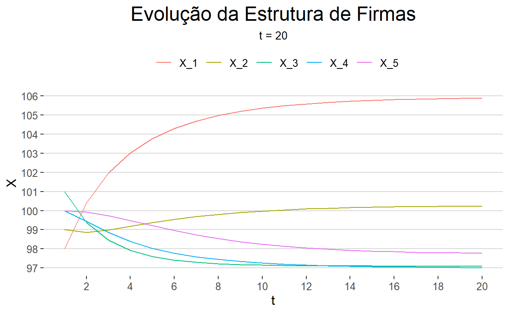
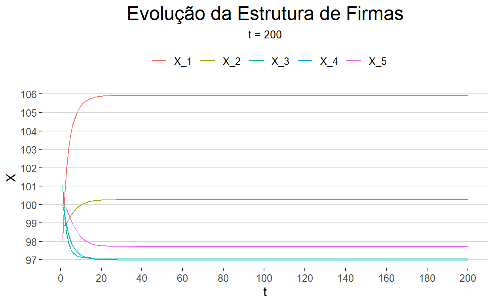
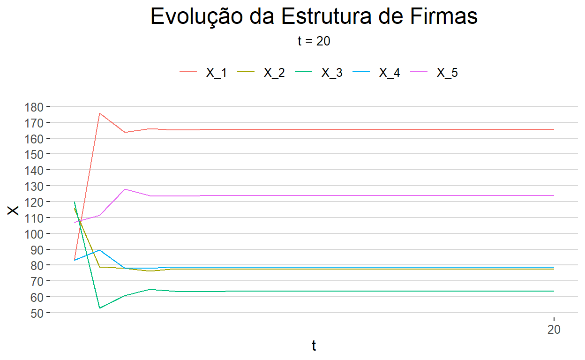
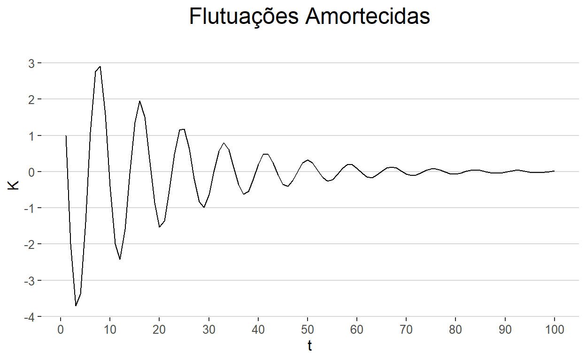
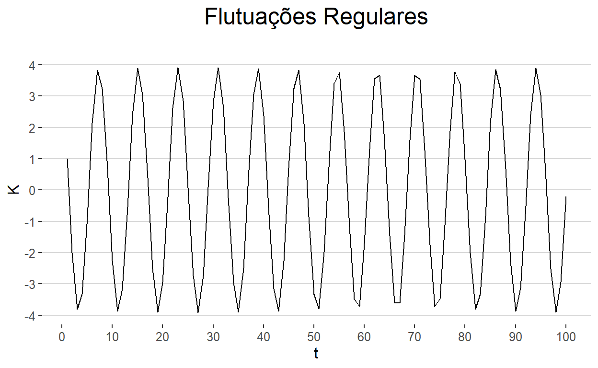
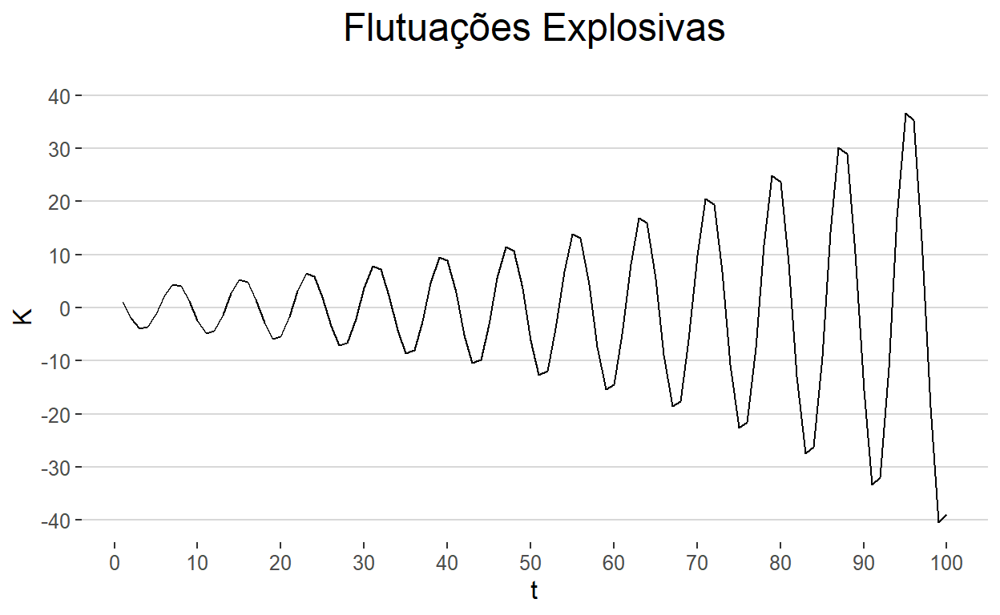

Resolução da Prova de Economia Matemática.
Proponha uma matriz de transição T e analise a dinâmica do sistema
Como descrito no enunciado, para encontrar a matriz de Transição T, basta calcular cada probabilidade de deslocamento de classes por parte das firmas, dividindo-se o número de firmas em cada uma das classes pelo total da respectiva coluna.
Seja a tabela das transições:
A matriz de transição T fica:
matT <- matrix(c(
(c(66, 22, 1, 3, 2) / 94 ),
(c(22, 47, 23, 6, 2) / 100),
(c(6, 21, 50, 22, 5) / 104),
(c(2, 7, 22, 51, 18) / 100),
(c(2, 2, 5, 18, 73) / 100)),
ncol = 5)
matT
[,1] [,2] [,3] [,4] [,5]
[1,] 0.70212766 0.22 0.05769231 0.02 0.02
[2,] 0.23404255 0.47 0.20192308 0.07 0.02
[3,] 0.01063830 0.23 0.48076923 0.22 0.05
[4,] 0.03191489 0.06 0.21153846 0.51 0.18
[5,] 0.02127660 0.02 0.04807692 0.18 0.73\[ \begin{aligned} T = \begin{bmatrix} 0.702 & 0.22 & 0.058 & 0.02 & 0.02 \\ 0.234 & 0.47 & 0.202 & 0.07 & 0.02 \\ 0.011 & 0.23 & 0.481 & 0.22 & 0.05 \\ 0.032 & 0.06 & 0.212 & 0.51 & 0.18 \\ 0.021 & 0.02 & 0.048 & 0.18 & 0.73 \end{bmatrix} \end{aligned} \]
Para analisar a dinâmica do sistema, é preciso verificar como a matriz T modifica a composição de estratos, \(X_t\), ao longo do tempo, uma vez que:
\[ X_{t+1} = T \cdot X_t \]
Generalizando:
\[ X_{t+n} = T^n \cdot X_t \]
Ou,
\[ \begin{aligned} \begin{bmatrix} x_{1,t} \\ x_{2,t} \\ x_{3,t} \\ x_{4,t} \\ x_{5,t} \\ \end{bmatrix} = \begin{pmatrix} \begin{bmatrix} 0.702 & 0.22 & 0.058 & 0.02 & 0.02 \\ 0.234 & 0.47 & 0.202 & 0.07 & 0.02 \\ 0.011 & 0.23 & 0.481 & 0.22 & 0.05 \\ 0.032 & 0.06 & 0.212 & 0.51 & 0.18 \\ 0.021 & 0.02 & 0.048 & 0.18 & 0.73 \end{bmatrix} \end{pmatrix} ^t \cdot \begin{bmatrix} x_{1,1} \\ x_{2,1} \\ x_{3,1} \\ x_{4,1} \\ x_{5,1} \\ \end{bmatrix} \end{aligned} \]
De acordo com Boldrini (pp. 18-19), caso a matriz T seja regular, é possível fazer previsões de longo prazo e essas não dependem dos valores inicias (\(t=1\)). Para que a matriz T seja regular, basta que ela possua todos os seus elementos não nulos. E sendo a matriz T regular, as potências \(T^n\) vão se aproximar de uma matriz \(P\):
matP <- matT
for(i in 1:1000) {
matP <- matP %*% matT
}
matP
[,1] [,2] [,3] [,4] [,5]
[1,] 0.2127140 0.2127140 0.2127140 0.2127140 0.2127140
[2,] 0.2013371 0.2013371 0.2013371 0.2013371 0.2013371
[3,] 0.1949594 0.1949594 0.1949594 0.1949594 0.1949594
[4,] 0.1947589 0.1947589 0.1947589 0.1947589 0.1947589
[5,] 0.1962305 0.1962305 0.1962305 0.1962305 0.1962305Todas as colunas de \(P\) são iguais, dadas pelo vetor \(V\):
V <- matP[,1]
V
[1] 0.2127140 0.2013371 0.1949594 0.1947589 0.1962305Para qualquer que seja o vetor de probabilidade inicial, \(V_1\), o vetor de probabilidades \(T^nV_1\) se aproxima de \(V\). Assim, no longo não há mais mudança, uma vez que \(V=TV\).
data.frame("V" = matrix(V, ncol = 1), "TV" = matT %*% V)
V TV
1 0.2127140 0.2127140
2 0.2013371 0.2013371
3 0.1949594 0.1949594
4 0.1947589 0.1947589
5 0.1962305 0.1962305O vetor \(V\) indica as probabilidades de uma firmar acabar em cada estrato. Assim, no longo prazo, há 21,2% de probabilidade de a firmar estar no estrato I, 20,1% no estrato II, 19,4% no estrato III, 19,4% no estrato IV e 19,6% no estrato V.
Estime a composição das classes na estrutura produtiva projetada para 2025 e para 2030
Em 2020, as firmas eram assim divididas em estratos:
\[ \begin{aligned} X_{2020} = \begin{bmatrix} 98 \\ 99 \\ 101 \\ 100 \\ 100 \end{bmatrix} \end{aligned} \]
Para encontrar \(X_{2025}\) e \(X_{2030}\), basta utilizarmos a equação \(X_{t+1} = T \cdot X_t\):
\[ \begin{aligned} \begin{bmatrix} x_{1,2025} \\ x_{2,2025} \\ x_{3,2025} \\ x_{4,2025} \\ x_{5,2025} \\ \end{bmatrix} = \begin{bmatrix} 0.702 & 0.22 & 0.058 & 0.02 & 0.02 \\ 0.234 & 0.47 & 0.202 & 0.07 & 0.02 \\ 0.011 & 0.23 & 0.481 & 0.22 & 0.05 \\ 0.032 & 0.06 & 0.212 & 0.51 & 0.18 \\ 0.021 & 0.02 & 0.048 & 0.18 & 0.73 \end{bmatrix} \cdot \begin{bmatrix} 98 \\ 99 \\ 101 \\ 100 \\ 100 \end{bmatrix} \end{aligned} \]
[,1]
[1,] 100.41543
[2,] 98.86040
[3,] 99.37025
[4,] 99.43304
[5,] 99.92088Arredondando:
\[ \begin{aligned} X_{2025} = \begin{bmatrix} 100 \\ 99 \\ 99 \\ 99 \\ 100 \end{bmatrix} \end{aligned} \]
x2030 <- matT %*% x2025
x2030
[,1]
[1,] 101.97372
[2,] 98.98975
[3,] 98.45161
[4,] 98.85361
[5,] 99.73131Arredondando:
\[ \begin{aligned} X_{2030} = \begin{bmatrix} 102 \\ 99 \\ 98 \\ 99 \\ 100 \end{bmatrix} \end{aligned} \]
data.frame(x2020, x2025, x2030) %>% round()
x2020 x2025 x2030
1 98 100 102
2 99 99 99
3 101 99 98
4 100 99 99
5 100 100 100Por simulação, mostre a evolução da estrutura no longo prazo e analise as suas características dinâmicas. Justifique a resposta. Qual é a composição das classes para \(t \to \infty\)? Como interpretamos esses valores?
Vamos criar a função para rodar a simulação:
Agora vamos Inicializar os parâmetros da função:
matT <- matrix(c(
(c(66, 22, 1, 3, 2) / 94 ),
(c(22, 47, 23, 6, 2) / 100),
(c(6, 21, 50, 22, 5) / 104),
(c(2, 7, 22, 51, 18) / 100),
(c(2, 2, 5, 18, 73) / 100)),
ncol = 5)
Xi <- x2020
t <- 20
list(matT = matT, Xi = Xi, t = t)
$matT
[,1] [,2] [,3] [,4] [,5]
[1,] 0.70212766 0.22 0.05769231 0.02 0.02
[2,] 0.23404255 0.47 0.20192308 0.07 0.02
[3,] 0.01063830 0.23 0.48076923 0.22 0.05
[4,] 0.03191489 0.06 0.21153846 0.51 0.18
[5,] 0.02127660 0.02 0.04807692 0.18 0.73
$Xi
[,1]
[1,] 98
[2,] 99
[3,] 101
[4,] 100
[5,] 100
$t
[1] 20Finalmente, a simulação:
simulacao(matT = matT, Xi = Xi, t = t) %>%
ts() %>%
autoplot(facets = F) +
theme_hc() +
scale_x_continuous(breaks = seq(0, t, 2)) +
scale_y_continuous(breaks = seq(90, 110, 1)) +
scale_color_discrete("") +
theme(plot.title = element_text(size = 18, hjust = 0.5, colour = "black"),
plot.subtitle = element_text(size = 10, hjust = 0.5, colour = "black"),
legend.position = "top") +
ggtitle("Evolução da Estrutura de Firmas", subtitle = paste0("t = ", t)) +
xlab("t") +
ylab("X")

A composição das classes parece convergir para um equilíbrio no longo prazo. Para ter certeza, vejamos em um período de tempo maior:
t <- 200
simulacao(matT = matT, Xi = Xi, t = t) %>%
ts() %>%
autoplot(facets = F) +
theme_hc() +
scale_x_continuous(breaks = seq(0, t, 20)) +
scale_y_continuous(breaks = seq(90, 110, 1)) +
scale_color_discrete("") +
theme(plot.title = element_text(size = 18, hjust = 0.5, colour = "black"),
plot.subtitle = element_text(size = 10, hjust = 0.5, colour = "black"),
legend.position = "top") +
ggtitle("Evolução da Estrutura de Firmas", subtitle = paste0("t = ", t)) +
xlab("t") +
ylab("X")

De fato, quando \(t \to \infty\), a composição das classes converge para um equilíbrio. Vejamos essa composição em \(t = 1000\):
Xf <- simulacao(matT = matT, Xi = Xi, t = 1000) %>% tail(1)
Xf
X_1 X_2 X_3 X_4 X_5
[1000,] 105.9316 100.2659 97.08981 96.98995 97.72278No longo prazo (arredondando),
\[ \begin{aligned} X_{t\to\infty} = \begin{bmatrix} 106 \\ 100 \\ 97 \\ 97 \\ 98 \end{bmatrix} \end{aligned} \]
Se calcularmos as percentagens em cada estrato nesse longo prazo:
Xf_pct <- Xf / sum(Xf)
Xf_pct
X_1 X_2 X_3 X_4 X_5
[1000,] 0.212714 0.2013371 0.1949594 0.1947589 0.1962305Essas são as mesmas porcentagens do vetor \(V\) encontrado no item (a):
data.frame("V" = V, "Xf_pct" = matrix(Xf_pct, ncol = 1))
V Xf_pct
1 0.2127140 0.2127140
2 0.2013371 0.2013371
3 0.1949594 0.1949594
4 0.1947589 0.1947589
5 0.1962305 0.1962305O que corrobora a hipótese de que no longo prazo o sistema tende a um equilíbrio, uma vez que a matriz de transição é regular. Tal equilíbrio é dado pelo vetor \(V\), que indica as porcentagens finais em cada estrato, independente do vetor inicial \(V_1\):
X_alt <- simulacao(matT = matT,
Xi = round(runif(n = 5, min = 80, max = 120)),
t = 1000) %>% tail(1)
X_alt
X_1 X_2 X_3 X_4 X_5
[1000,] 107.6333 101.8766 98.64948 98.54803 99.29263X_alt_pct <- X_alt / sum(X_alt)
X_alt_pct
X_1 X_2 X_3 X_4 X_5
[1000,] 0.212714 0.2013371 0.1949594 0.1947589 0.1962305data.frame("V" = V, "Xf_alt_pct" = matrix(X_alt_pct, ncol = 1))
V Xf_alt_pct
1 0.2127140 0.2127140
2 0.2013371 0.2013371
3 0.1949594 0.1949594
4 0.1947589 0.1947589
5 0.1962305 0.1962305Gere uma matriz de Markov aleatória (que atenda às características da matriz de transição e para cinco classes) e a partir de uma estrutura produtiva inicial que você escolha, analise a estrutura final para \(t \to \infty\). Compare a dinâmica deste sistema com o anterior (o resultante dos ítens a-c) e justifique as suas observações a partir da análise de estabilidade. Há características persistentes?
Gerando uma matriz de Markov e uma estrutura produtiva inicial aleatórias:
Inicializando os parâmetros:
matT <- A
Xi <- X0
t <- 20
list(matT = matT, Xi = Xi, t = t)
$matT
[,1] [,2] [,3] [,4] [,5]
[1,] 0.2565598 0.52406417 0.295081967 0.2266010 0.37037037
[2,] 0.2244898 0.05347594 0.311475410 0.1625616 0.02962963
[3,] 0.0845481 0.04278075 0.004098361 0.0591133 0.33333333
[4,] 0.1545190 0.17647059 0.307377049 0.1477833 0.06666667
[5,] 0.2798834 0.20320856 0.081967213 0.4039409 0.20000000
$Xi
[,1]
[1,] 83
[2,] 116
[3,] 120
[4,] 83
[5,] 107
$t
[1] 20Simulando:
simulacao(matT = matT, Xi = Xi, t = t) %>%
ts() %>%
autoplot(facets = F) +
theme_hc() +
scale_x_continuous(breaks = seq(0, t, 20)) +
scale_y_continuous(breaks = seq(50, 200, 10)) +
scale_color_discrete("") +
theme(plot.title = element_text(size = 18, hjust = 0.5, colour = "black"),
plot.subtitle = element_text(size = 10, hjust = 0.5, colour = "black"),
legend.position = "top") +
ggtitle("Evolução da Estrutura de Firmas", subtitle = paste0("t = ", t)) +
xlab("t") +
ylab("X")

No longo prazo, a estrutura produtiva também converge para um equilíbrio, assim como a do sistema anterior. Esse resultado está de acordo com o que Boldrini (pp. 18-19) afirma, de que caso a matriz de transição seja regular, é possível fazer previsões de longo prazo.
Vejamos essa composição em t = 1000:
X_1 X_2 X_3 X_4 X_5
[1000,] 166 78 63 79 124Os valores estão de acordo com o que o gráfico apresenta. Se calcularmos as percentagens em cada estrato nesse longo prazo:
Xf_pct <- Xf / sum(Xf)
Xf_pct
X_1 X_2 X_3 X_4 X_5
[1000,] 0.3251673 0.1523216 0.1247386 0.1545188 0.2432537Agora, calculando a matriz \(P = T^n\):
matP <- matT
for(i in 1:1000) {
matP <- matP %*% matT
}
matP
[,1] [,2] [,3] [,4] [,5]
[1,] 0.3251673 0.3251673 0.3251673 0.3251673 0.3251673
[2,] 0.1523216 0.1523216 0.1523216 0.1523216 0.1523216
[3,] 0.1247386 0.1247386 0.1247386 0.1247386 0.1247386
[4,] 0.1545188 0.1545188 0.1545188 0.1545188 0.1545188
[5,] 0.2432537 0.2432537 0.2432537 0.2432537 0.2432537Temos o vetor \(V\) das probabilidades no longo prazo:
V <- matP[,1]
V
[1] 0.3251673 0.1523216 0.1247386 0.1545188 0.2432537Comparando os dois vetores de probabilidades:
data.frame("V" = V, "Xf_pct" = matrix(Xf_pct, ncol = 1))
V Xf_pct
1 0.3251673 0.3251673
2 0.1523216 0.1523216
3 0.1247386 0.1247386
4 0.1545188 0.1545188
5 0.2432537 0.2432537Assim como no sistema dos itens (a) a (c), como \(T\) é regular, esse sistema também entra em equilíbrio no longo prazo, com as probabilidades dos estratos sendo iguais as probabilidades do vetor \(V\) — resultante de \(T^n\), com \(n \to \infty\).
Elabore a descrição do modelo e a representação formal do mesmo (as equações)
De acordo com Possas e Baltar, o modelo de Kalecki, em sua primeira versão (1933), é composto por:
A partir dessas variáveis, são construídas as equações do modelo:
\[\begin{align} P_t = C_t + A_t \end{align}\]
\[\begin{align} C_t = B + \lambda P_t \end{align}\]
Sendo que \(\lambda\) é constante no curto prazo.
De (1) e (2):
\[\begin{align} P_t = \dfrac{B+A_t}{1-\lambda} \end{align}\]
As decisões de investimento são dadas pela função
\[\begin{align} \dfrac{I_t}{K_t} = f(\dfrac{P_t}{K_t}) \end{align}\]
Como de (3) tem-se que \(\dfrac{P}{K}\) é proporcional a \(\dfrac{B+A}{K}\), (4) pode ser reescrita como:
\[\begin{align} \dfrac{I_t}{K_t} = \phi (\dfrac{B+A_t}{K_t}) \end{align}\]
Assim, supondo uma função linear:
\[\begin{align} I_t = m (B+A_t) - nK_t \end{align}\]
Os autores apontam que é necessário ter \(m>0\), sendo \(\phi\) uma função crescente, e \(n>0\) para que o modelo comporte a ocorrência de ciclos econômicos.
A variação do capital fixo, K, em cada período, é, por definição:
\[\begin{align} \Delta K_t = K_{t+1} - K_t = A_t - U \end{align}\]
onde U representa a reposição de capital.
Da definição tem-se que \(I_t = A_{t+\theta}\). Partindo de \(\theta = 1\) e substituindo (7) em (6):
\[\begin{align} \boxed{K_{t+2} - (m + 1) K_{t+1} + (m + n) K_t = mB + (m - 1) U} \end{align}\]
que é uma equação em diferença de segunda ordem, do tipo:
\[ \begin{aligned} y_{t+2} + a_1y_{t+1} + a_2y_t = c \end{aligned} \]
Com
\[\begin{align} \begin{cases} a_1 &= -(m+1) \\ a_2 &= (m+n) \\ c &= mB + (m-1) U \end{cases} \end{align}\]
Determine as condições de estabilidade do modelo em função dos parâmetros
A solução da equação homogênea (\(c=0\)) é do tipo \(y_t=kx^t\), sendo \(k\) e \(x\) coeficientes que precisam ser determinados.
Substituindo a solução \(y_t=kx^t\) na equação homogênea, tem-se:
\[ \begin{aligned} x^2 + a_1x + a_2 = 0 \end{aligned} \]
As raízes \((x_1,x_2)\) definirão o comportamento da variável \(y\) no tempo.
Apenas com raízes complexas há a ocorrência de flutuações cíclicas no modelo. Nesse caso, a solução homogênea será da forma:
\[ y_t = ar^tcos(wt + \epsilon) \]
onde \(a\) e \(\epsilon\) são arbitrárias e dependem apenas das condições iniciais.
De acordo com os autores, a ocorrência de flutuações cíclicas depende da condição \(a_1^2<4a_2\). Juntando com (9), tem-se:
\[\begin{align} (m-1)^2 < 4n \end{align}\]
Também a partir de (9), os coeficientes \(w\) e \(r\) ficam assim:
\[ \begin{aligned} &w = cos^{-1} \begin{pmatrix} \dfrac{m+1}{2\sqrt{m+n}} \end{pmatrix} \\[10pt] &r = \sqrt{m+n} \end{aligned} \]
Com isso, as flutuações dos ciclos podem ser de três tipos:
Por fim, as demais variáveis (renda, lucros, investimento) terão o mesmo comportamento
Simule um caso estável e um caso instável
Para simular uma equação em diferença de ordem 2, vamos construir uma função. Lembrando que a forma geral da equação homogênea é
\[ \begin{aligned} y_{t+2} + a_1y_{t+1} + a_2y_t = 0 \\ y_{t+2} = -a_1y_{t+1} - a_2y_t \end{aligned} \]
Para rodar a simulação, precisamos de valores paras as condições iniciais \(y_0\) e \(y_1\) e para os parâmetros \(a_1\) e \(a_2\). Lembrando que:
\[ \begin{aligned} \begin{cases} a_1 &= -(m+1) \\ a_2 &= (m+n) \end{cases} \end{aligned} \]
E que
Para que o comportamento seja estável, basta que a soma de \(m\) e \(n\) não seja maior que 1.
Flutuações Amortecidas
Condições iniciais e parâmetros:
m <- 0.4
n <- 0.5
y0 <- 1
y1 <- -2
a1 <- -(m + 1)
a2 <- (m + n)
t <- 100
Rodando a simulação:
simulacao_2o(y0 = y0, y1 = y1, a1 = a1, a2 = a2, t = t) %>%
ts() %>%
autoplot() +
theme_hc() +
scale_x_continuous(breaks = seq(0, t, 10)) +
scale_y_continuous(breaks = seq(-5, 5, 1)) +
scale_color_discrete("") +
theme(plot.title = element_text(size = 18, hjust = 0.5, colour = "black"),
plot.subtitle = element_text(size = 10, hjust = 0.5, colour = "black"),
legend.position = "top") +
ggtitle("Flutuações Amortecidas", subtitle = "") +
xlab("t") +
ylab("K")

Flutuações Regulares
Condições iniciais e parâmetros:
m <- 0.4
n <- 0.6
y0 <- 1
y1 <- -2
a1 <- -(m + 1)
a2 <- (m + n)
t <- 100
Rodando a simulação:
simulacao_2o(y0 = y0, y1 = y1, a1 = a1, a2 = a2, t = t) %>%
ts() %>%
autoplot() +
theme_hc() +
scale_x_continuous(breaks = seq(0, t, 10)) +
scale_y_continuous(breaks = seq(-5, 5, 1)) +
scale_color_discrete("") +
theme(plot.title = element_text(size = 18, hjust = 0.5, colour = "black"),
plot.subtitle = element_text(size = 10, hjust = 0.5, colour = "black"),
legend.position = "top") +
ggtitle("Flutuações Regulares", subtitle = "") +
xlab("t") +
ylab("K")

Para que o comportamento seja instável, basta que a soma de \(m\) e \(n\) seja maior que 1.
Flutuações Explosivas
Condições iniciais e parâmetros:
m <- 0.45
n <- 0.6
y0 <- 1
y1 <- -2
a1 <- -(m + 1)
a2 <- (m + n)
t <- 100
Rodando a simulação:
simulacao_2o(y0 = y0, y1 = y1, a1 = a1, a2 = a2, t = t) %>%
ts() %>%
autoplot() +
theme_hc() +
scale_x_continuous(breaks = seq(0, t, 10)) +
scale_y_continuous(breaks = seq(-50, 50, 10)) +
scale_color_discrete("") +
theme(plot.title = element_text(size = 18, hjust = 0.5, colour = "black"),
plot.subtitle = element_text(size = 10, hjust = 0.5, colour = "black"),
legend.position = "top") +
ggtitle("Flutuações Explosivas", subtitle = "") +
xlab("t") +
ylab("K")
